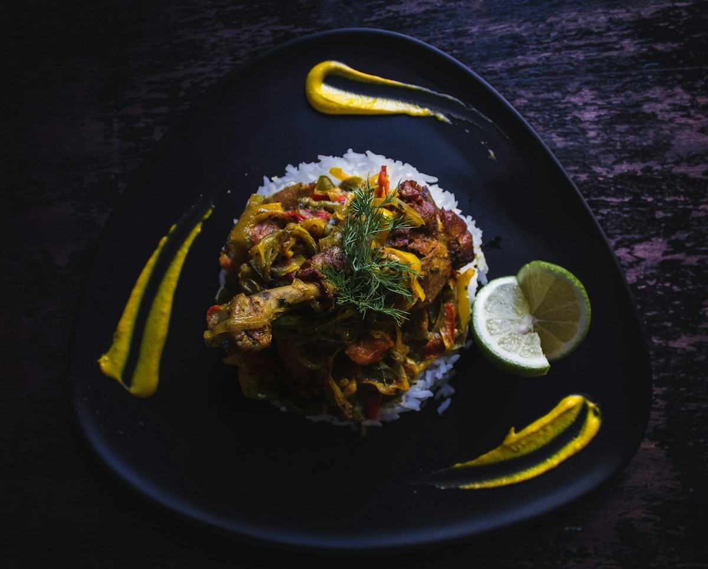

The Breath of the Wok: Wok Hei Mastery.
At Fortune Cookie V, cooking isn't just heating food; it is an ancient choreography of 700°F jet flame, seasoned carbon steel woks, and rapid rhythmic tossing that produces the prized smoky essence known across southern China as Wok Hei.

Three Pillars of NY-Style Chinese Cooking
How Fortune Cookie V brings the golden standard of New York Chinatown to East Charlotte.
Extreme Heat Caramelization
Our custom wok range generates immense localized heat. Liquid soy, rice wine, and aromatics vaporize in milliseconds upon hitting the wok wall, aerosolizing microscopic droplets that impart unmatched depth and smoky sweetness.
Fresh Daily Aromatics & Marinades
Flank steak, whole chicken breasts, and pork shoulders are sliced and velveted every morning in cornstarch, egg white, and Shaoxing rice wine. Fresh ginger, garlic, and scallions are prepped continuously throughout the day.
Authentic Reduction Sauces
From our signature General Tso sweet-chili reduction and orange-peel glaze to our slow-simmered dark garlic brown gravy, our sauces are made from original recipes without shortcuts.
Double Fryer & Wok Glaze Process
Ever wonder why our General Tso and Sesame Chicken stay crisp even on the ride home? We employ a specialized two-stage fry process: first cooking the interior poultry to juicy tenderness, then a second flash-fry at high temperature for a shatteringly crisp crust.
Finally, the chicken is tossed in a smoking hot wok with glaze for less than five seconds, ensuring the sauce coats every crevice while preserving maximum crunch.
Taste the Difference